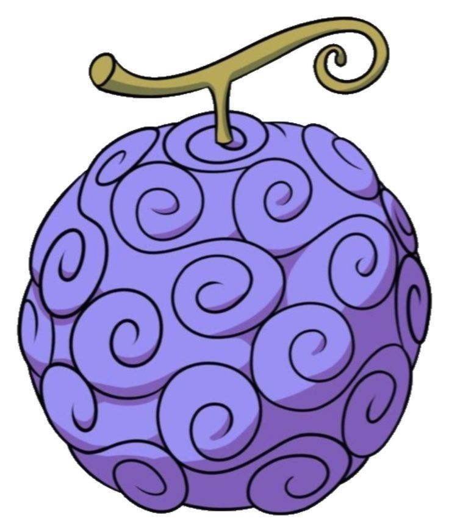
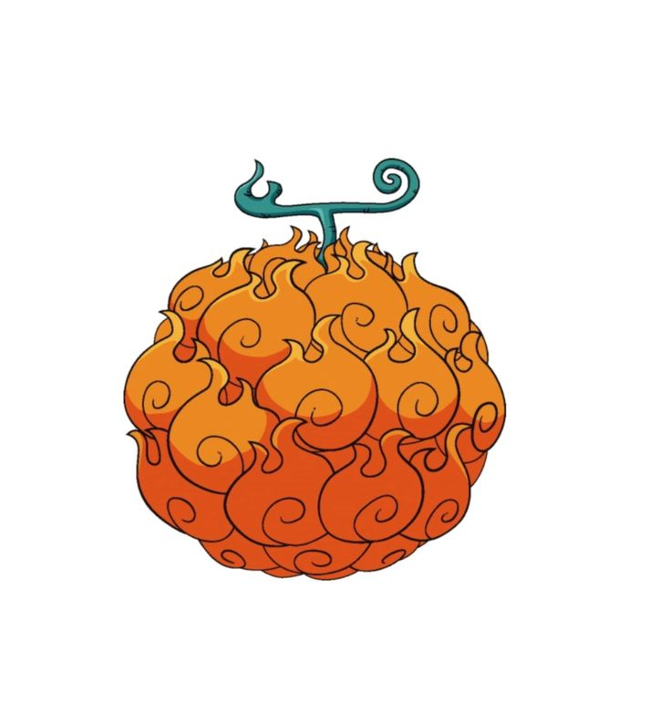
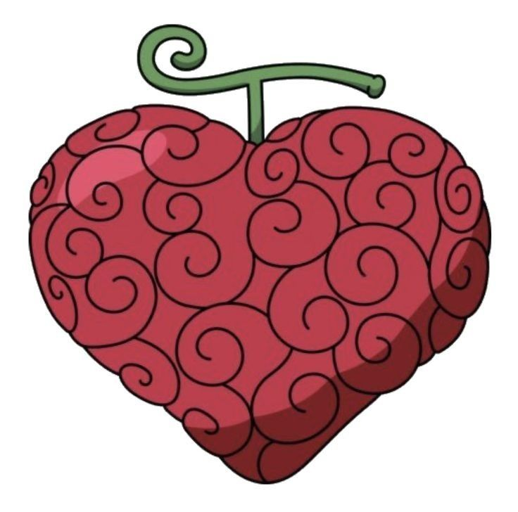
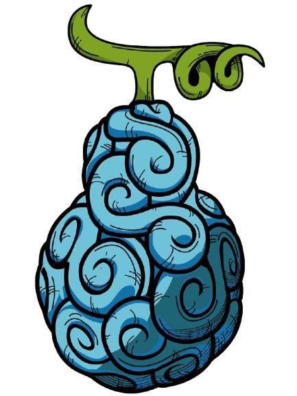

One Piece adalah manga dan anime petualangan karya Eiichiro Oda yang menceritakan perjalanan Monkey D. Luffy bersama kru Topi Jerami. Mereka berlayar melintasi berbagai lautan dan pulau untuk mencari harta karun legendaris bernama One Piece. Luffy memiliki impian menjadi Raja Bajak Laut, sementara setiap anggota krunya memiliki tujuan dan impian mereka masing-masing.
Dunia One Piece dipenuhi oleh keajaiban dan bahaya, seperti keberadaan Buah Iblis yang memberikan kekuatan super serta lautan Grand Line yang penuh dengan misteri. Dalam petualangannya, kelompok Topi Jerami harus berhadapan dengan kelompok bajak laut rival, organisasi kejahatan, hingga kekuatan besar Pemerintah Dunia dan Angkatan Laut.
Selain menyajikan pertarungan yang seru, One Piece juga mengusung tema mendalam tentang arti kebebasan, persahabatan, kekeluargaan, dan tekad pantang menyerah. Perjalanan panjang ini tidak hanya membawa mereka mendekati impian masing-masing, tetapi juga menguak sejarah tersembunyi yang dapat mengubah tatanan dunia.
Buah Iblis adalah buah misterius dalam dunia One Piece yang memberikan kekuatan khusus kepada orang yang memakannya. Setiap buah memiliki kemampuan yang berbeda, seperti mengendalikan api, membuat tubuh menjadi elastis, atau mengendalikan benda tertentu. Namun, orang yang memakan Buah Iblis akan kehilangan kemampuan untuk berenang.

Gomu Gomu no Mi
Mera Mera no Mi
Ope Ope no Mi
Gura Gura no MiMonkey D. Luffy memiliki tubuh elastis berkat kekuatan Buah Iblis. Ia menggunakan berbagai teknik serangan untuk menghadapi musuh dan bercita-cita menjadi Raja Bajak Laut.
Roronoa Zoro adalah pendekar pedang yang menggunakan tiga pedang sekaligus. Ia memiliki kemampuan bertarung yang kuat dan bercita-cita menjadi pendekar pedang terhebat di dunia.
Nami adalah navigator andal yang menggunakan tongkat Clima-Tact untuk memanipulasi cuaca. Ia mampu menciptakan petir, angin, dan ilusi untuk bertarung.
Usopp adalah penembak jitu cerdik yang menggunakan ketapel Kabuto dengan amunisi tanaman khusus (Pop Green) untuk menghasilkan serangan yang bervariasi.
Sanji merupakan koki kru Topi Jerami yang menggunakan tendangan sebagai senjata utama. Ia mengandalkan kecepatan dan kekuatan kaki untuk melawan musuh.
Tony Tony Chopper adalah dokter hewan rusa yang memakan Buah Iblis Hito Hito no Mi. Ia bisa mengubah bentuk tubuhnya untuk bertarung dan mengobati berbagai penyakit.
Nico Robin adalah arkeolog yang memakan Buah Iblis Hana Hana no Mi. Ia mampu menumbuhkan anggota tubuhnya di berbagai tempat untuk melumpuhkan musuh.
Franky adalah tukang kayu bertenaga cola dengan tubuh cyborg yang dilengkapi berbagai senjata berat, meriam, dan perlengkapan mekanik canggih.
Brook adalah musisi tengkorak pemakan Buah Iblis Yomi Yomi no Mi. Ia bertarung menggunakan teknik pedang anggar serta kekuatan musik dan jiwa es dari alam baka.
Jinbe adalah juru mudi tangguh yang menguasai Karate Manusia Ikan. Ia memiliki kekuatan fisik luar biasa serta ahli mengendalikan arus air laut.
Singgah ke pelabuhan resmi: One Piece
Arahkan kompas (mouse) ke tautan untuk melihat perubahannya, lalu klik untuk berlayar.
Dua kru pertama Topi Jerami
Navigator, penembak jitu, dan koki
Lautan yang dilewati
Kapal Topi Jerami
Dokter, Arkeolog, & Tukang Kapal
Musisi dan juru mudi
| No | Nama | Posisi | Tujuan |
|---|---|---|---|
| 1 | Monkey D. Luffy | Kapten | Menjadi Raja Bajak Laut dan menemukan harta karun One Piece. |
| 2 | Roronoa Zoro | Pendekar pedang | Menjadi pendekar pedang terhebat |
| 3 | Nami | Navigator | Menggambar peta seluruh dunia |
| 4 | Usopp | Penembak jitu | Menjadi prajurit pemberani |
| 5 | Vinsmoke Sanji | Koki | Menemukan All Blue, lautan tempat bertemunya seluruh bahan makanan dari empat samudra. |
| 6 | Tony Tony Chopper | Dokter | Menjadi dokter yang dapat menyembuhkan segala jenis penyakit di dunia. |
| 7 | Nico Robin | Arkeolog | Menemukan Rio Poneglyph dan mengungkap sejarah abad yang hilang. |
| 8 | Franky | Tukang Kapal | Memastikan kapal Thousand Sunny berlayar mengelilingi dunia hingga ke ujung Samudra. |
| 9 | Brook | Musisi | Mengelilingi dunia dan berlayar kembali untuk menemui paus Laboon di Twin Cape. |
| 10 | Jinbe | Juru Mudi | Mewujudkan kesetaraan serta kedamaian antara manusia ikan dan manusia. |
© 2026 - Kelompok empat. Dibuat untuk fans One Piece.